12. 3D Data Analysis
PointNet, permutation invariance, MVCNN, VoxNet, 3D segmentation
1. Challenges of 3D Data Analysis
3D data analysis extends the three core 2D vision tasks into 3D: classification (one label per object), object detection (locate and classify multiple objects), and semantic segmentation (label every single point or voxel).
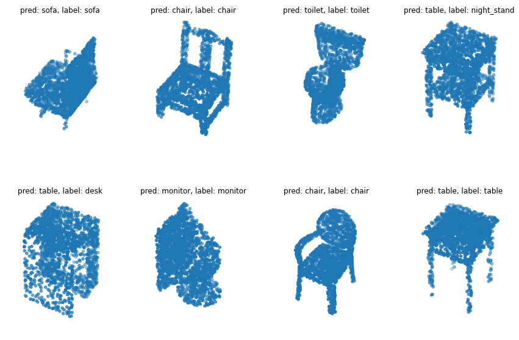
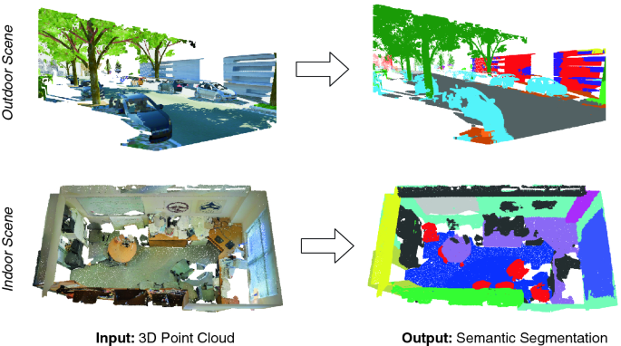
Six Key Challenges
| Challenge | Explanation |
|---|---|
| Volume of data | Indoor factory scans contain billions of points; orders of magnitude more than 2D images |
| Non-uniform sparsity | Points denser near sensor, sparser far away; density varies enormously |
| No grid-like structure | Unlike pixels, the $n$-th point can be anywhere in 3D space |
| Permutation invariance | Shuffling the point list changes nothing about the geometry — any processing method must respect this |
| Acquisition artifacts | Noise, missing data, registration errors, temporal ghosting from moving objects |
| Occlusions | Sensors only capture surfaces facing them; back sides require multiple viewpoints |
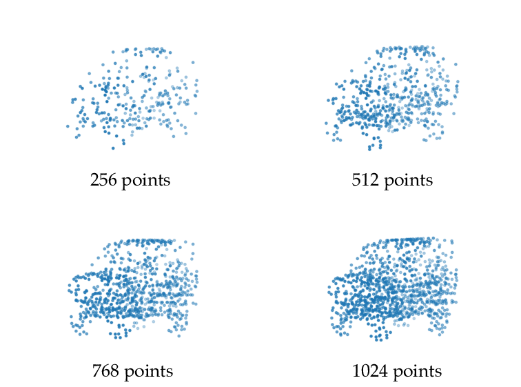
2. Three Families of Approaches
| Approach | Representation | Core Idea | Pioneer |
|---|---|---|---|
| Multi-view projection | 2D rendered images | Sidestep 3D challenges by projecting to 2D; use proven 2D CNNs | MVCNN |
| Volumetric | Regular 3D voxel grid | Discretize 3D space into a regular grid; use 3D CNNs | VoxNet |
| Direct point cloud | Raw unordered $(x,y,z)$ points | Process the raw point cloud directly with specialized architectures | PointNet |
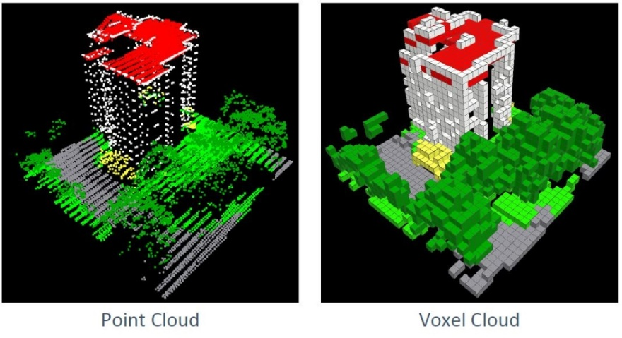
3. Multi-View Projection: MVCNN
MVCNN (Multi-View Convolutional Neural Network) is the pioneering projection-based method. It leverages pre-trained 2D CNN models — critical because labeled 3D training data is scarce compared to massive 2D datasets like ImageNet.
MVCNN Architecture for Classification
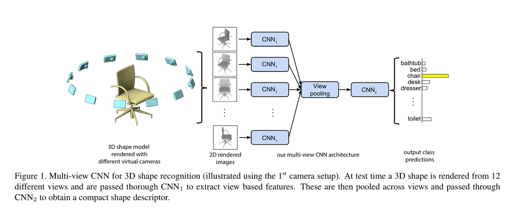
- Multi-view rendering: Render the 3D shape from 12 virtual camera viewpoints, producing 12 standard 2D images.
- Per-view feature extraction (CNN_1, shared weights): Each of the 12 images passes through the same CNN (e.g., VGG pre-trained on ImageNet). All 12 views share identical weights.
- View pooling (element-wise max): Aggregate 12 feature vectors into a single descriptor:
$$\mathbf{d} = \text{ViewPool}(\mathbf{f}_1, \ldots, \mathbf{f}_{12}) = \max(\mathbf{f}_1, \ldots, \mathbf{f}_{12})$$where max is applied element-wise across the feature dimension.
- Classification (CNN_2 + FC): The pooled feature passes through CNN_2 and fully connected layers to produce class probabilities.
MVCNN Fusion Strategies
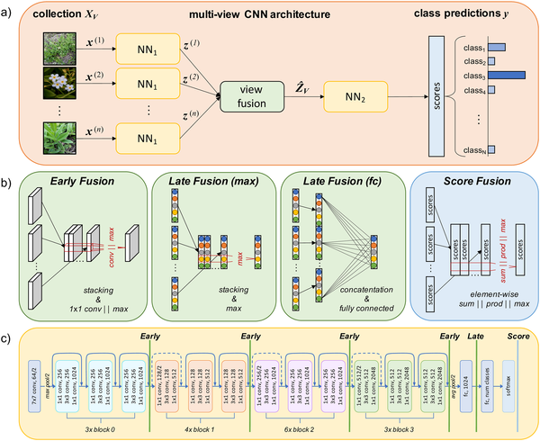
| Strategy | Fusion Point | Trade-off |
|---|---|---|
| Early fusion | After first shared CNN layers | More view interaction; less per-view specialization |
| Late fusion | After full per-view CNN processing | More per-view processing; combination happens late |
| Score fusion | At final prediction level | Simplest; each view votes independently |
Advantages: Reuses well-established 2D CNN methods; relatively low computation cost; leverages massive pre-trained 2D models.
Limitations: Loss of internal geometric structure — 2D projections cannot represent what is behind visible surfaces. Incomplete segmentation because occluded points receive no label. View-dependent results.
Status: Popularity is fading as the field moves toward direct point cloud methods.
4. SnapNet: Multi-View 3D Segmentation
SnapNet extends the multi-view idea from classification to semantic segmentation of point clouds.
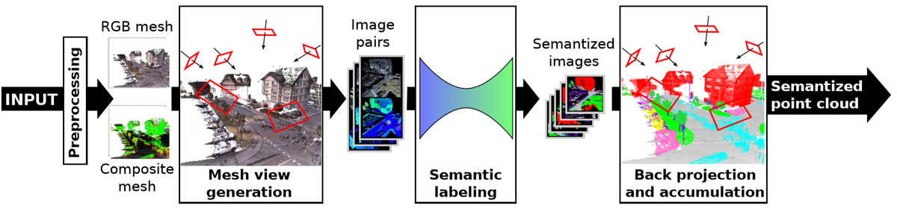
- View generation: Place virtual cameras around/within the scene; synthesize RGB and depth composite texture images from each camera.
- Semantic labeling: Feed each RGB-depth image pair into an encoder-decoder segmentation network, producing per-pixel class labels.
- Back-projection and voting: Map 2D per-pixel labels back onto 3D points. When multiple views see the same 3D point, accumulate votes and take the majority class.
- Output: A fully semantized point cloud where every point has a class label.
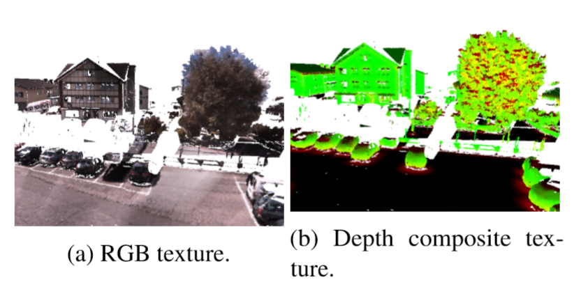
5. Volumetric Methods: VoxNet and 3D CNNs
VoxNet is the pioneering volumetric method. It converts the raw point cloud to a regular 3D voxel grid, then applies 3D CNNs — solving the problem of irregular, unstructured point clouds by imposing a regular grid like pixels in an image.
Voxelization: The Critical Trade-off
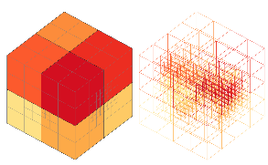
Octree: Memory-Efficient Voxels
An octree recursively subdivides 3D space into 8 octants, only where data exists. Empty regions are never subdivided — concentrating resolution where data actually is while saving enormous memory on empty space.
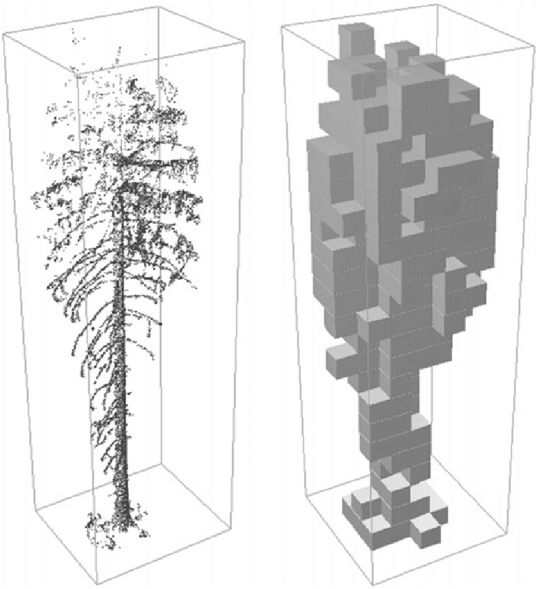
3D Spatial Convolution
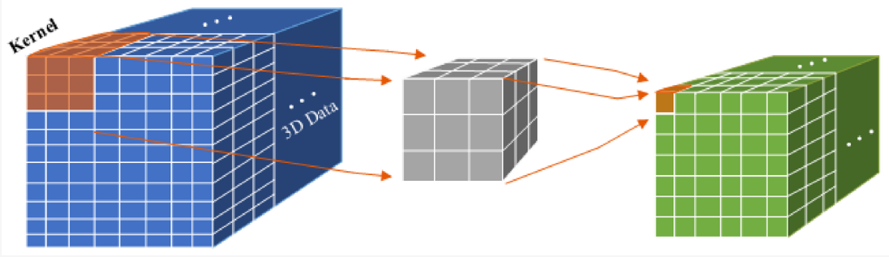
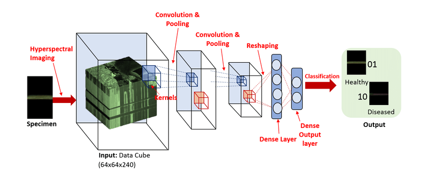
Advantages: Solves irregular/unordered point cloud problem by imposing a regular grid. All standard CNN techniques apply (batch norm, skip connections, etc.).
Limitations: Very expensive memory ($N^3$ cubic growth). Quantization loses detail. Sparse voxel grids waste memory on empty space.
Current status: Applied mainly in medical imaging where data samples are small and high resolution is less critical.
6. Direct Point Cloud: PointNet
Multi-view and volumetric approaches are artificial workarounds that convert point clouds to other representations, introducing information loss and computational overhead. PointNet analyzes point clouds directly as they are.
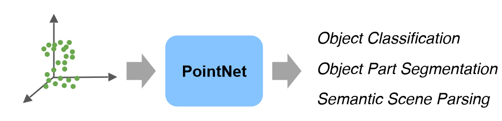
The Core Design Problem
How do you design a neural network whose output is invariant to the ordering of its inputs? Traditional networks expect fixed-order inputs (pixel $(0,0)$ is always top-left). A point cloud is a set — the same geometry listed in any order must produce the same output.
7. PointNet Architecture Walkthrough
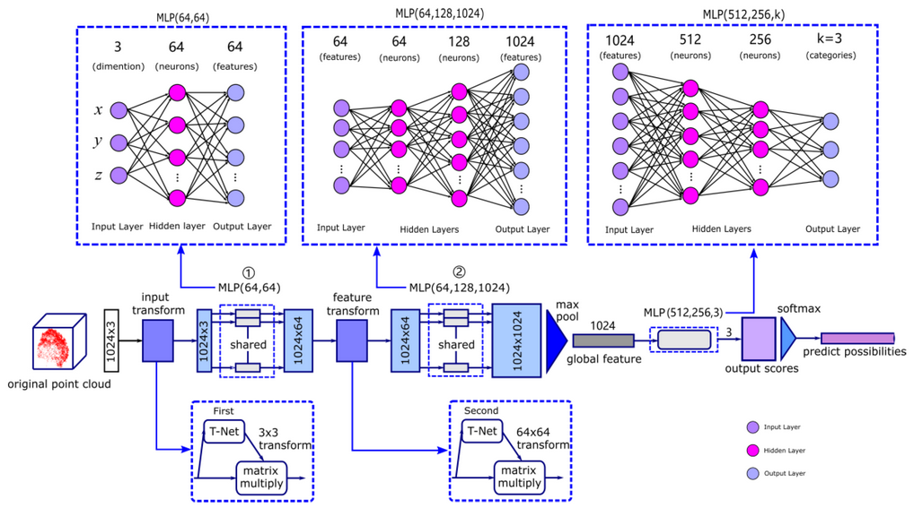
T-Net (Spatial Transformer Network)
The T-Net is a sub-network that predicts a transformation matrix to align the point cloud to a standard canonical pose. Objects in real scans can appear in arbitrary orientations; the T-Net learns to undo this.
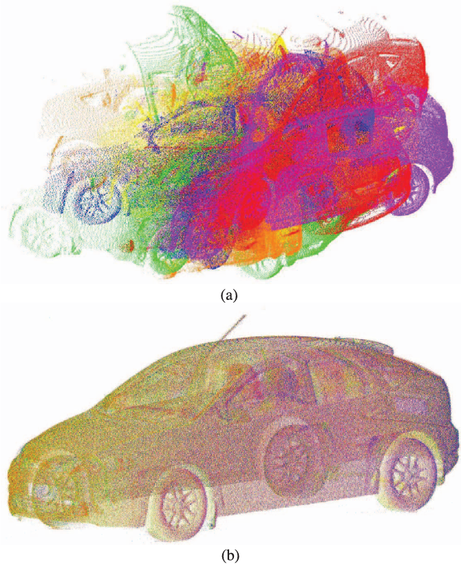
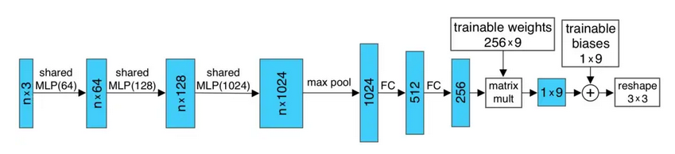
Max Pooling: The Key to Permutation Invariance
After shared MLP Block 2 maps each of the $n$ points to 1024 dimensions, max pooling is applied across all $n$ points for each feature dimension:
This produces a single 1024-dimensional global feature vector describing the entire point cloud.
PointNet Dimension Table
| Step | Operation | Input Shape | Output Shape |
|---|---|---|---|
| 1 | Input | — | $1024 \times 3$ |
| 2 | Input T-Net | $1024 \times 3$ | $3 \times 3$ matrix |
| 3 | Matrix multiply (align) | $1024 \times 3$ | $1024 \times 3$ |
| 4 | Shared MLP Block 1 | $1024 \times 3$ | $1024 \times 64$ |
| 5 | Feature T-Net | $1024 \times 64$ | $64 \times 64$ matrix |
| 6 | Matrix multiply (align features) | $1024 \times 64$ | $1024 \times 64$ |
| 7 | Shared MLP Block 2 | $1024 \times 64$ | $1024 \times 1024$ |
| 8 | Max pooling (across 1024 points) | $1024 \times 1024$ | $1 \times 1024$ |
| 9 | MLP Block 3 | $1 \times 1024$ | $1 \times k$ |
| 10 | Softmax | $1 \times k$ | $1 \times k$ (probabilities) |
PointNet for Segmentation
For per-point class labels, PointNet concatenates the global feature vector with each point's local feature (from shared MLP block 1, 64-dimensional):
Per-point MLPs then predict a class label for each point. This gives every point both local context (its own features) and global context (the entire object's feature).
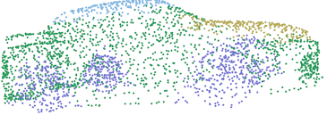
Feature Transform Regularization
The second T-Net produces a $64 \times 64$ matrix. To prevent it from being arbitrary, a regularization loss encourages it to be close to an orthogonal matrix:
The total loss is $L = L_{\text{cls}} + \lambda \cdot L_{\text{reg}}$ where $L_{\text{cls}}$ is standard cross-entropy loss.
8. Advanced Point-Based Architectures
In the 4 years following PointNet, approximately ~300 point-based 3D analysis networks were published. They address PointNet's main limitation: it does not capture local geometric structure — max pooling creates a global feature but ignores relationships between nearby points.
| Network | Key Innovation | Task |
|---|---|---|
| PointNet++ | Hierarchical feature learning with ball queries; captures local structure at multiple scales | Classification, segmentation |
| Point Transformer | Self-attention mechanisms on point clouds; models long-range dependencies | Classification, segmentation |
| RandLA-Net | Random sampling + local feature aggregation for efficient large-scale segmentation | Large-scale segmentation |
| SqueezeSeg | Projects LiDAR to 2D range images, applies efficient CNN | LiDAR segmentation |
| RangeNet++ | Range-image semantic segmentation with post-processing for point labels | LiDAR segmentation |
PointNet++ Key Idea
PointNet++ applies PointNet hierarchically in local neighborhoods, mirroring how CNNs learn local then global features:
- Farthest Point Sampling (FPS): Select well-spread subset of points.
- Ball Query: For each selected point, find all points within radius $r$.
- Mini-PointNet on local patches: Apply PointNet to each neighborhood to extract a local feature.
- Repeat hierarchically: Use outputs as inputs to the next level, capturing progressively larger-scale patterns.
This is identified as a hot research topic. Current directions include:
- Pre-training on unlabeled point cloud data using pretext tasks (e.g., predicting missing points)
- Contrastive learning in 3D: learning representations where different views of the same object are similar
- Masked point modeling: analogous to masked language models (BERT-style pre-training for 3D)
- Foundation models for 3D understanding: general-purpose models fine-tuned for specific 3D tasks
9. Comparison of All Three Families
| Criterion | Multi-View (MVCNN) | Volumetric (VoxNet) | Direct Point Cloud (PointNet) |
|---|---|---|---|
| Input | 2D rendered images | Regular 3D voxel grid | Raw unordered $(x,y,z)$ points |
| Pre-trained models | Yes (ImageNet) | Limited | No |
| Memory cost | Low (just 2D images) | Very high ($N^3$) | Moderate (linear in $n$) |
| Information loss | Loses internal geometry | Quantization loss | Minimal |
| Permutation invariance | N/A (pixel grid) | N/A (voxel grid) | Achieved via max pooling |
| Segmentation quality | Limited (occlusion) | Good (3D autoencoder) | Excellent |
| Current status | Popularity fading | Mainly medical imaging | Dominant paradigm |
- Limited 3D training data: Multi-view (MVCNN) — leverage pre-trained 2D models
- Medical imaging: Volumetric (3D CNN) — small, regular medical volumes suit 3D grids
- Autonomous driving / indoor mapping: Direct point cloud (PointNet++, RandLA-Net) — handles massive irregular scans
- Real-time applications: Multi-view or RangeNet++ — fast inference with optimized 2D pipelines